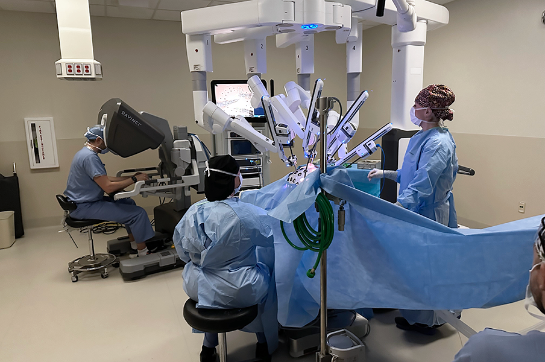

The Advancements of Robotic Surgery
| URL |
What is Robotic Surgery |
| Site
Author |
UCLA Health |
| Abstract |
Robotic-assisted surgery has become increasingly popular over the years. This site serves to explain what robotic surgery is, some misconceptions about it, and what benefits it provides for patients. When robotic surgery is performed, patients must understand that the robot is constantly being controlled by the surgeon and that it cannot make any of its own decisions. However, the use of robots in surgeries allows surgeons to have a greater range of motion and a better view of the operating field. Patients can benefit from robotic surgery because it leads to fewer complications during surgery, shorter hospital stays, and quicker recovery times. The site also explains common conditions that have been treated using robotic surgery, some of which include heart, thoracic, and gynecological surgery. Robotic surgery will continue to be used in the field of medicine as technology further advances. |

| URL |
Telesurgery is Moving from Possibility to Practice |
| Site
Author |
Jennifer Bagley |
| Abstract |
This
site actually explains a new field that combines both robotic surgery and telehealth, known as telesurgery. Telesurgery is a practice of medicine in which surgeons can perform operations on a person in a remote location with the use of a robotic system. The site talks about a successful telesurgery that was performed, connecting Floridian surgeons to a 67-year-old patient from Angola in need of a radical prostatectomy. The site talks about possible complications with this technology, especially since it is relatively new. However, it also acknowledges how it could significantly expand access to care. Telesurgery can benefit patients in rural or underserved communities where access to experienced surgeons may be limited. |